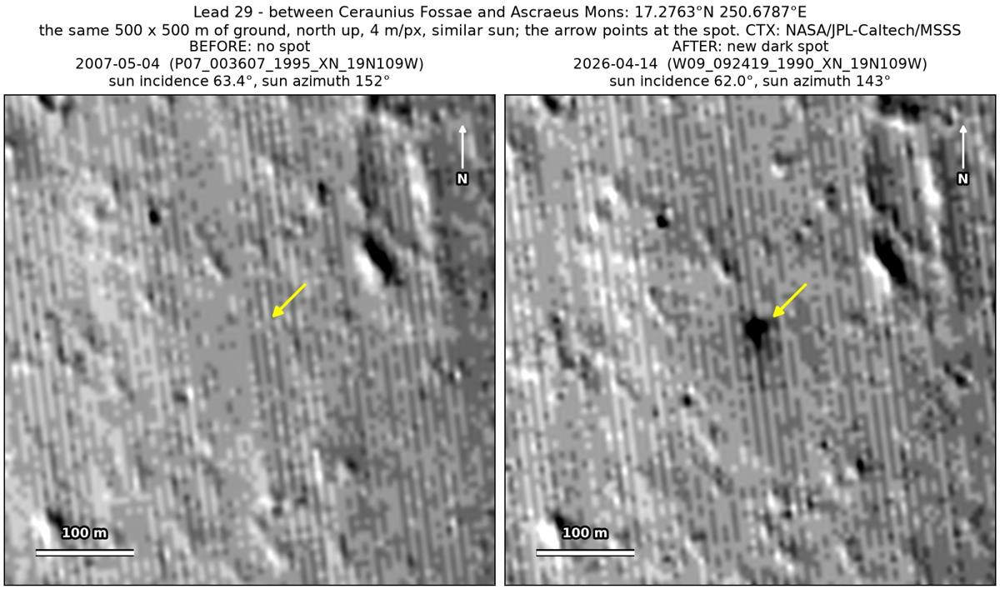
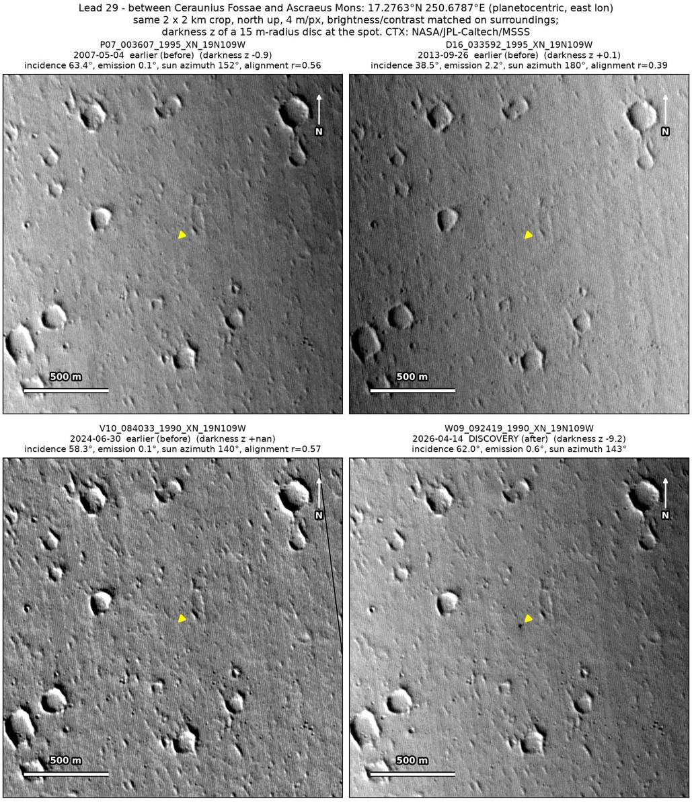
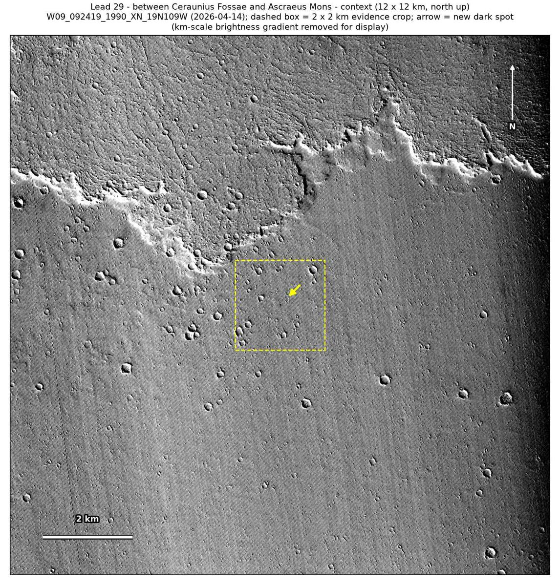

Professor of Mathematics
Paata Ivanisvili
Department of Mathematics, University of California, Irvine

← Possible new impact sites on Mars
Candidate 29: Between Ceraunius Fossae and Ascraeus Mons
Promising · roughly 60%

What changed. A black dot 25 to 30 m across appeared on the lava plains that lie between Ceraunius Fossae and Ascraeus Mons. It formed between June 2024 and April 2026 and is in one CTX image so far.
Why it may be a new impact. Three earlier images, from 2007, 2013 and 2024, show nothing there. Two of them, of 4 May 2007 and 30 June 2024, were taken under the same sun as the April 2026 image, when nearby pits cast the same shadows, so the dot is not a pit’s shadow, and a dark feature nearby shows in the 2007 and 2013 images. A black dot appearing on lava plains could be the blast zone of a small new crater.
- Location
- 17.276° N, 250.679° E (109.321° W)
- Absent
- 4 May 2007, 26 September 2013 and 30 June 2024
- Present
- 14 April 2026
- Size
- Black dot 25 to 30 m across
- Confidence
- Promising candidate; roughly 60% that it is a new impact.
- Caveat
- Only one image shows it, so a flaw in that image cannot be fully ruled out, and the last image without it, of June 2024, could only be checked by eye. It lies outside every footprint of the high-resolution HiRISE camera; the nearest ends 18.7 km away. Like every candidate here, it is unconfirmed: see the caveat.

